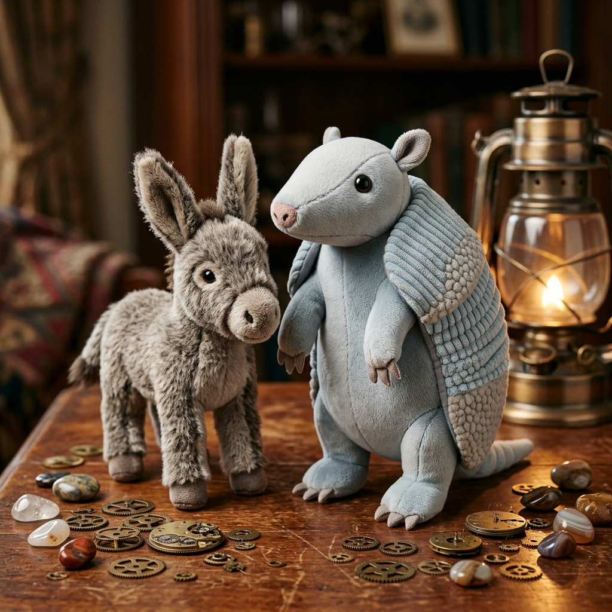
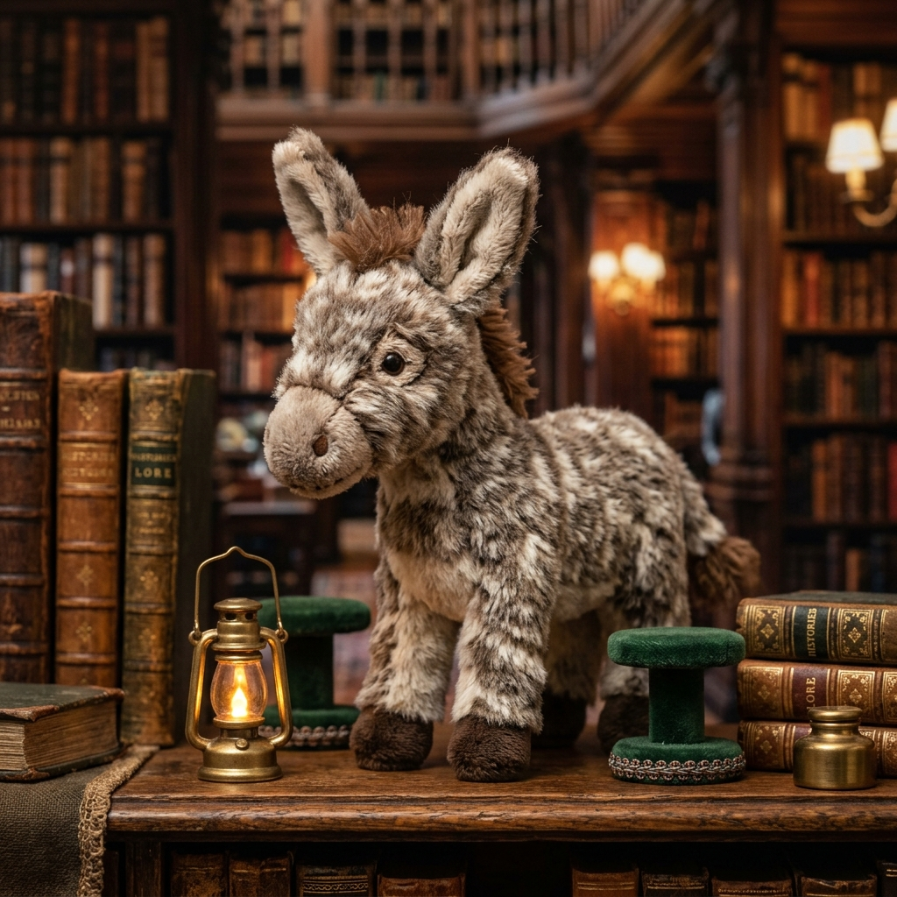

The Gallery of Whispered Words
Being a Pleasant & Wholesome Tale of Dilly the Armadillo & Little Gray the Plush Donkey
Chapter I — The Cabinet of Tactile Treasures
High upon the polished mahogany desk within the sunlit study of Willow Cottage, Miss Dilly the plush armadillo engaged herself in a most meticulous undertaking. Her ribbed, corduroy-textured blue-grey armor plate caught the golden slant of the afternoon sun, whilst the pebbled plush sections of her shell glistened like fine river cobbles. With a earnest tilt of her smooth light-grey head and a twitch of her tapered pink-tipped snout, she lifted a magnifying lens in one stubby grey paw to inspect an array of miniature curiosities.
Beside her, Little Gray, a small plush donkey whose mottled greyish-brown fur rustled delightfully with every bound, hopped from one dark brown hoof to the other. His long fuzzy ears pricked up with earnest fascination, and his brown-tufted tail gave an impetuous swish against the dark wood. "Oh, Miss Dilly!" he exclaimed, his dark embroidered nostrils twitching with joy. "What wondrous things have we collected today?"
"We are assembling a gallery, my dear Little Gray," Dilly replied softly, her voice carrying the measured cadence of an accomplished curator. "A cabinet of physical wonders. But to catalog them properly, one must employ the precise magic of every descriptive adjective."
Little Gray tilted his white snout, his small dark eyes blinking in curiosity. "A descriptive adjective? Is that a kind of secret key?"
"In a manner of speaking," smiled Dilly, turning to a river stone resting on a piece of baize. "A descriptive adjective is a word that paints the physical truth of an object. It describes what our five senses—our eyes, ears, noses, tongues, and paws—can perceive directly. Observe this stone, Little Gray. Run your dark brown hooves across its surface."
The little donkey leaned forward, tapping his hoof gently against the cold gray stone. "It is not smooth like your snout, Dilly! It feels rough and bumpy."
"Precisely!" praised Dilly. "The word pebbled is a descriptive adjective. It tells us about its texture. And look here—at this coil of woven thread." She picked up a slender spool. "How does the sun catch it?"
"It glints! It looks bright and shining!" Little Gray offered enthusiastically.
"Indeed," Dilly affirmed gently. "It possesses a shimmering sheen. Shimmering is an adjective that reveals how it appears to our eyes. And what of this brass gear from the old mantle clock?"
Little Gray nudged the wheel with his nose, nudging its dense weight. "Oof! It is exceedingly heavy and feels cold."

"Splendid!" cheered Dilly, writing the words neatly upon a tiny paper placard with a fine fountain pen. "Heavy, cold, shimmering, and pebbled—all of these are descriptive adjectives because they belong to the concrete world of sight, touch, and weight. They describe the physical form of things we can hold in our paws."
Little Gray beamed with pride, his long ears standing straight up. He trotted around the mahogany table, delighting in naming every texture he could find—the corduroy ridges of Dilly's back armor, the soft white plush of his own muzzle, and the polished grain of the wooden table. Physical reality, he realized, was rich with wonderful describing words.
Chapter II — The Lantern of Intangible Light
As the sun dipped lower, casting long lavender shadows across the study, Little Gray wandered toward a quiet corner of the grand mahogany desk. There stood a secondary tier of tiny exhibition stands—a series of elegant miniature pedestals wrapped in crimson velvet. Yet, as the little donkey stepped closer and squirted his eyes to look, his mouth fell open in utter bewilderment.
"Miss Dilly!" he called out, scampering back to the armadillo. "Come quickly! Someone has stolen the treasures from the second row! The velvet stands are entirely empty!"
Dilly trotted over on her four stubby grey legs, her tapered tail swishing with quiet amusement. She stopped beside a small, softly glowing brass lantern that sat upon the desk, illuminating the vacant velvet cushions with warm light.
"No thief has visited us, my dear Little Gray," Dilly explained mildly, her dark grey ears with their delicate pink inner lining twitching with affection. "These pedestals are reserved for treasures of a very different nature. They are dedicated to the abstract noun."

Little Gray stretched out one dark brown hoof and reached cautiously toward the top of an empty pedestal. He patted the air above the crimson velvet. "There is nothing here to touch," he said, shaking his head. "My hooves feel only space. My eyes see no stone, no gear, no ribbon."
"And that is precisely the point," said Dilly, placing a gentle paw on his shoulder. "An abstract noun is a word that names a concept, an emotion, a state of being, or an idea. Unlike a concrete object, an abstract noun cannot be touched with your paws, seen with your eyes, or heard with your ears. Yet, it is as real as any stone on this table."
Little Gray scratched his short brown mane with his hoof. "If I cannot touch it, how do I know it is there?"
"Consider the feeling that fills your chest when we embark upon an adventure," Dilly suggested, pointing to the glowing brass lantern. "What do you feel when you step into the dark corner without fear?"
"I feel... courage!" Little Gray declared softly.
"Yes!" whispered Dilly. "Courage is an abstract noun. You cannot put courage in a jar or weigh it upon a balance scale, but you hold it within your heart. And when you wait patiently for me to finish my cataloging without interrupting, what are you demonstrating?"
"I am showing patience," Little Gray answered, his eyes shining with sudden understanding.
"Indeed! Patience is another abstract noun," Dilly affirmed. "So too is warmth, not merely the physical heat of the stove, but the gentle comfort of our friendship. And look at you now, bouncing with bright spirits—that vibrant energy you possess is enthusiasm!"
Little Gray gasped in delight, his tail tip trembling with excitement. "Then these velvet stands are not empty at all! They are holding ideas and feelings that give meaning to everything else in the study!"
Chapter III — A Harmony of Form and Spirit
With the lamps lit and the study filled with cozy twilight, the two friends set to work completing their grand exhibition. Little Gray had discovered that language was like a magnificent tapestry, woven together by distinct threads: the physical qualities described by descriptive adjectives, and the quiet, invisible truths named by abstract nouns.
"Let us pair them together," proposed Dilly, arranging inkpots and cards. "Each physical object on our catalog table shall stand beside the unseen idea it inspires."
Little Gray bounded forward to assist. He selected a heavy brass padlock that lay upon the mahogany surface. "This lock is sturdy and strong," he said, proudly using his descriptive adjectives to capture its physical nature. "It keeps our study chest safe."
"And what idea does it represent upon our velvet pedestal?" Dilly inquired, her pen poised over a fresh card.
"It represents security!" Little Gray answered confidently, naming the abstract noun.
"Magnificent!" Dilly wrote the words down with elegant flourishes. Next, she gestured to the small brass lantern that cast a soft golden radiance over their work. "And this lamp? Describe its physical presence first, my clever friend."
"It is a glowing, radiant lamp," Little Gray offered, admiring the warm light reflecting off Dilly's corduroy armor plate. "And the idea it brings to a dark room is hope!"
"A perfect pair," Dilly agreed warmly. "A glowing lamp of physical brass, illuminating the abstract spirit of hope."
Together, they arranged item after item, creating a marvelous balance throughout the cabinet. They placed a delicate, fragile silk ribbon beside the pedestal marked friendship, and a solid, ancient wooden bound book beside the pedestal marked wisdom.
When the final card was laid in place, Little Gray stood back on his dark brown hooves, leaning his mottled greyish-brown shoulder against Dilly's smooth plush shell. The gallery was complete. Every tangible thing had been described by vivid sensory words, and every intangible feeling had been honored by its true name.
"We have brought true harmony to the study," Little Gray murmured softly, pleased to recognize harmony as yet another marvelous abstract idea.
"Indeed we have," Dilly replied, tucking her snout in contented satisfaction. "For when physical form and inward spirit are spoken with care, the world becomes a gallery of endless wonder."